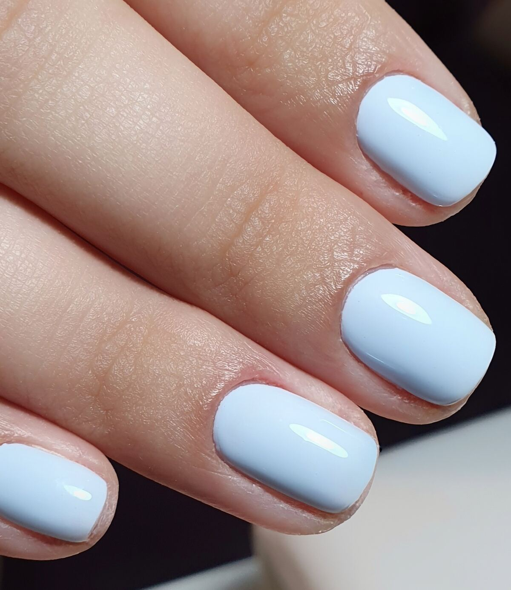
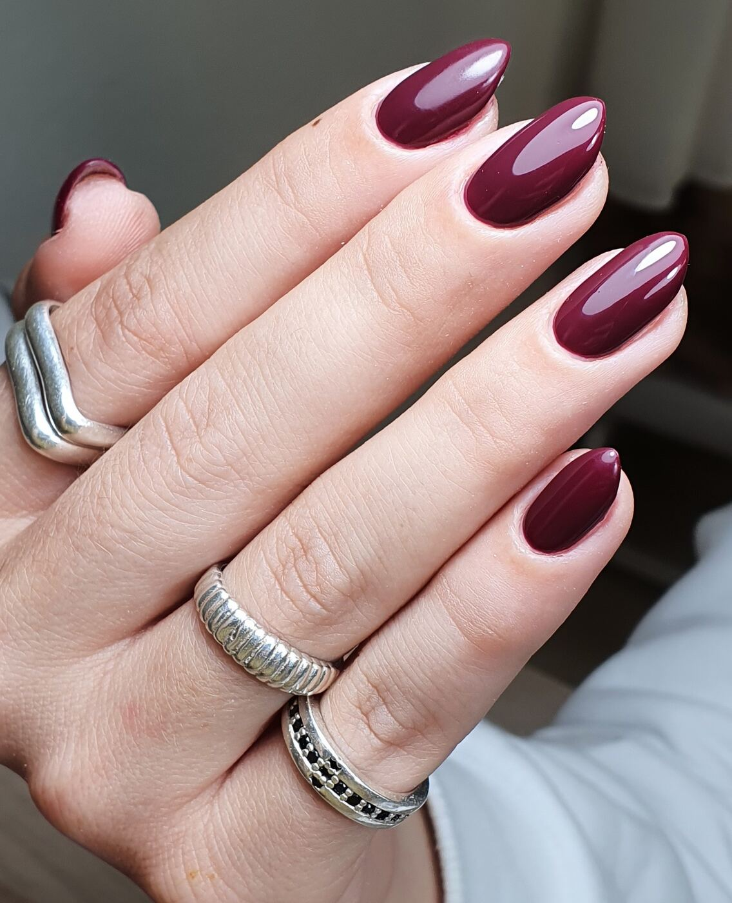
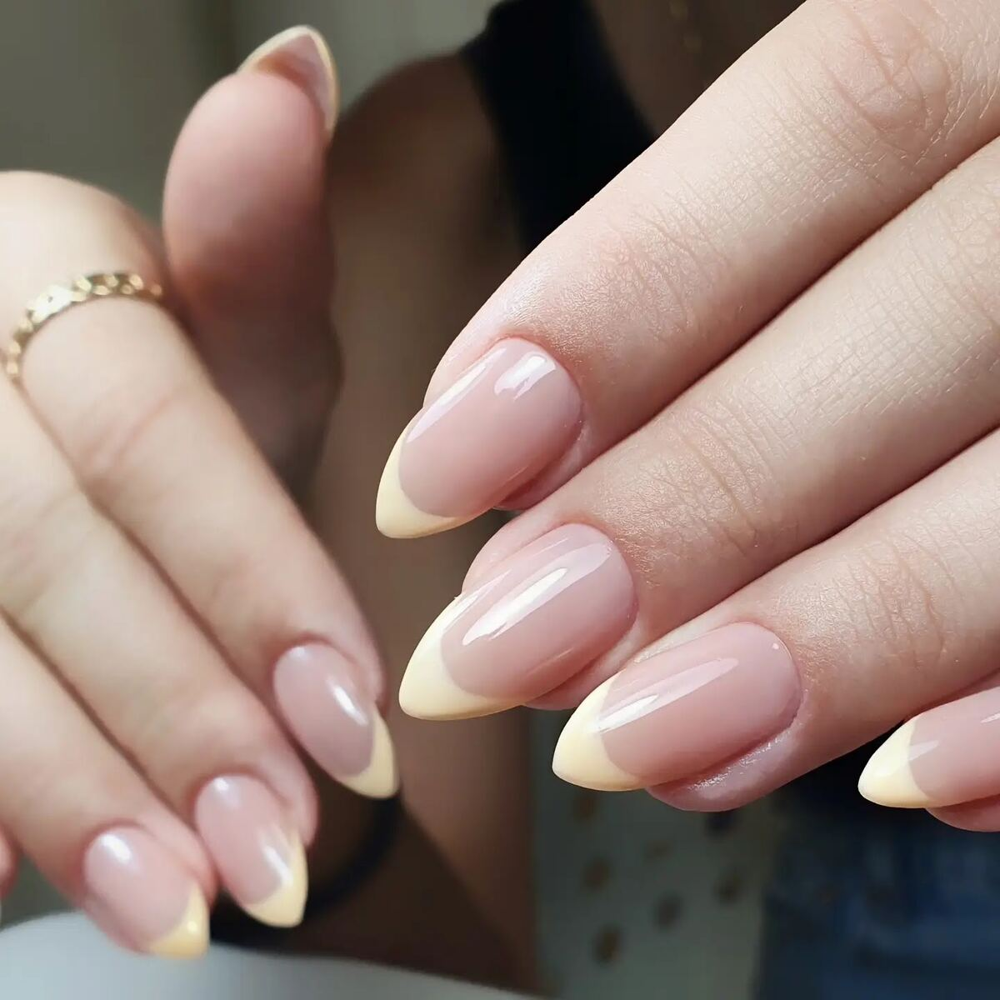

לק ג'לGel polish
צבע מלא וברק עמוק, בגוון שבוחרים.Full colour and a deep shine, in the shade you pick.
״לק ג'ל שמחזיק לאורך זמן.״
“Gel polish that lasts a long time.” (translated)
Daniela Zak
קונספט לדוגמה שנבנה עבור סוניה אמרם · זה אינו האתר הרשמי של העסקA sample concept built for Sonia Amram · This is not the business’s official website
לק ג'ל, מניקור ופדיקור רפואיGel polish, manicure & medical pedicure
קליניקה ברחוב הצוללת דקר 2, חיפה · 5.0 בגוגל מ־41 ביקורותA clinic at 2 HaTzolelet Dakar St, Haifa · 5.0 on Google from 41 reviews



עבודות אמיתיות של סוניהSonia’s real work
עבודה אמיתית של סוניה, בהגדלה.Sonia’s real work, magnified.
קו הקוטיקולה
״העבודה שלה מקצועית מאוד, מדויקת ומוקפדת עד הפרטים הקטנים.״
“Her work is very professional, precise and meticulous down to the smallest details.” (translated from Hebrew)
marianna landa · ביקורת בגוגלGoogle review
לידיים ולרגליים, בקליניקה של סוניה.For hands and feet, in Sonia’s clinic.
צבע מלא וברק עמוק, בגוון שבוחרים.Full colour and a deep shine, in the shade you pick.
״לק ג'ל שמחזיק לאורך זמן.״
“Gel polish that lasts a long time.” (translated)
Daniela Zak
צורה, קוטיקולה וגימור. גם בלי לק ג'ל.Shape, cuticles and finish. With or without gel.
״יד מדויקת, גישה נעימה ויחס אישי.״
“A precise hand, a pleasant manner and personal attention.” (translated)
Daniela Zak
טיפול בכף הרגל ובציפורניים, בקליניקה.Care for the feet and toenails, in the clinic.
״הקליניקה נקייה ומסודרת ברמה גבוהה, מה שנותן תחושת ביטחון ורוגע.״
“The clinic is clean and orderly to a high standard, which gives a sense of safety and calm.” (translated)
marianna landa
שש עבודות, שישה צבעים. עוד באינסטגרם.Six pieces, six colours. More on Instagram.
sonia.a_beauty״גם יצא מדהים וגם היה כל כך נעים עם סוניה.״
“It came out amazing, and it was so pleasant with Sonia.” (translated)
shaked weissman · ביקורת בגוגלGoogle review
5.0
בגוגל, מתוך 41 ביקורותon Google, from 41 reviews
״אצל סוניה היתה לי חוויה מתקנת… סוניה קשובה וסבלנית, עבדה בצורה עדינה.״
“With Sonia I had a corrective experience… Sonia is attentive and patient, and worked gently.” (translated)
לימור בלוך״בעלת ידע רב מאד בתחום הציפורניים, ידע מחקרי, לא סתם.״
“She has deep knowledge of nails, real research knowledge.” (translated)
nudelmichal״מקצוענית אמיתית, יד מדויקת… כל פעם יוצאת ממנה מרוצה.״
“A true professional with a precise hand. I leave happy every time.” (translated)
Daniela Zak״עבודה מדהימה ברמה מקצועית סופר גבוהה… ברור לי שאחזור.״
“Amazing work at a very high professional level… I know I’ll be back.” (translated)
shaked weissman״סוניה אישה נעימה מאוד, אדיבה ובעלת הליכות, יודעת להקשיב ולהתאים את הטיפול בצורה אישית.״
“Sonia is a very pleasant, courteous and gracious woman who knows how to listen and tailor the treatment to you.” (translated)
marianna landaבוחרים טיפול ויום, וההודעה לסוניה מוכנה בוואטסאפ.Pick a treatment and a day, and your WhatsApp message to Sonia is ready.
אל: סוניה · 050-901-3957To: Sonia · 050-901-3957
שליחה בוואטסאפSend on WhatsAppברחוב הצוללת דקר 2 בחיפה. לפי אחת הלקוחות בביקורת, יש מדרגות לעלות בדרך פנימה.At 2 HaTzolelet Dakar St, Haifa. One client mentions in her review that there are stairs to climb on the way in.
ראשון עד חמישי 9:00–18:00, שישי 8:30–13:00, שבת סגור.Sunday to Thursday 9:00–18:00, Friday 8:30–13:00, closed on Saturday.
כן. אחת הלקוחות כתבה בביקורת שעשתה מניקור (לא לק ג'ל) ופדיקור מלא.Yes. One client wrote in her review that she had a manicure (not gel) and a full pedicure.
בוואטסאפ או בטלפון: 050-901-3957.On WhatsApp or by phone: 050-901-3957.
באינסטגרם של סוניה: sonia.a_beauty.On Sonia’s Instagram: sonia.a_beauty.
חיפה, 3486202Haifa, 3486202